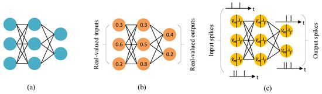
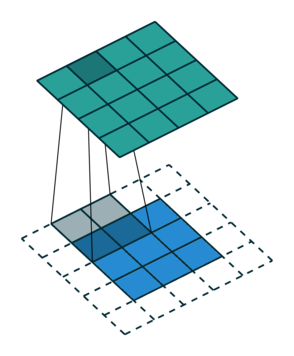

Conda packaging for GeNN
üìÇ Project Repository
üîó Conda-package-GeNN
This repository contains all the code, packaging recipes, and documentation developed during my Google Summer of Code project.
üìë Table of Contents
- üåç Google Summer of Code (GSoC)
- ü߆ About INCF
- ⚡ About GeNN
- ❓ Problem Statement
- üì¶ Deliverables
- üéÆ Rise of CUDA in Neural Simulations
- üì¶ Why Conda (and not PyPI)
- üèóÔ∏è Package Architecture
- ⚔️ Challenges Faced and Solutions
- üåÄ Challenge 1: Transition from CUDA <12.x to CUDA ‚â•12.x
- ⚔️ Challenge 2: Setting CUDA_PATH After Installation
- ⚔️ Challenge 3: Moving Windows Build to NMake + MSBuild
- ⚔️ Challenge 4: Fixing macOS .dylib Handling in pygenn-cpu
- üì¶ Conda-Forge Packages
- üåü Impact of the Package
üåç Google Summer of Code (GSoC)
Google Summer of Code (GSoC) is an annual global program focused on bringing new contributors into open source software development.
Contributors work with open source organizations under the guidance of mentors to learn, code, and make impactful contributions during the summer.
üìä GSoC 2025 Highlights
- 15,240 applicants from 130 countries submitted 23,559 proposals
- 185 mentoring organizations selected 1,272 contributors from 68 countries
- 66.3% of contributors had no prior open source experience, showing GSoC’s accessibility
- A three-week Community Bonding period helps contributors and mentors plan and get oriented before coding
üîó Read more on the official announcement
ü߆ About INCF
The International Neuroinformatics Coordinating Facility (INCF) is an open and FAIR (Findable, Accessible, Interoperable, and Reusable) neuroscience standards organization.
Launched in 2005 through a proposal from the OECD Global Science Forum, INCF’s mission is to make neuroscience data and knowledge globally shareable and reusable.
üåê Impact on Society
By developing community-driven standards and tools for data sharing, analysis, modeling, and simulation, INCF:
- Promotes collaboration across international neuroscience communities
- Enables reproducible and scalable research
- Accelerates discoveries in brain science
- Supports better understanding of brain function in both health and disease
Through these efforts, INCF helps build a more open scientific ecosystem, ultimately contributing to advances in healthcare, mental health, and neurological research worldwide.
⚡ About GeNN
The GPU-enhanced Neuronal Networks (GeNN) project is a code generation framework designed to accelerate the simulation of spiking neural networks (SNNs) using GPUs.
üî¨ Role in Neuroscience
GeNN plays a crucial role in computational neuroscience by:
- Enabling fast and efficient simulation of large-scale spiking neural networks
- Allowing researchers to prototype and test brain-inspired models at unprecedented scales
- Supporting reproducibility and standardization in neural simulations
- Bridging the gap between biological realism and computational efficiency
Through its GPU acceleration, GeNN empowers neuroscientists to explore complex models of brain function that would otherwise be computationally prohibitive.
❓ Problem Statement
GeNN is a C++ library that generates code for efficiently simulating Spiking Neural Networks (SNNs) using GPUs.
To compile the generated code, GeNN requires a C++ compiler and development versions of backend dependencies such as CUDA.
Currently, this means GeNN must be installed from source, which can be a barrier for many potential users: - Researchers may not have the right compiler or CUDA version installed - Installation errors can take hours to resolve - New users may be discouraged before even running their first simulation
üéØ Project Goal
For this project, I aimed to develop a Conda (Forge) package for GeNN which: - Handles the installation of all required dependencies (C++, CUDA, libraries) - Provides pre-built binaries for Linux, Windows, and macOS - Makes installation as simple as:
```bash conda install -c conda-forge pygenn-cpu # CPU-only conda install -c conda-forge pygenn-cuda # CUDA-enabled
üì¶ Deliverables
- ✅ Conda-Forge recipes for both CPU and CUDA variants of GeNN
- ✅ User documentation and installation instructions
üéÆ Rise of CUDA in Neural Simulations
The introduction of CUDA (Compute Unified Device Architecture) by NVIDIA revolutionized the way scientists and engineers simulate neural networks.
üöÄ Why CUDA Matters
- Provides massive parallelism by leveraging thousands of GPU cores
- Accelerates matrix operations and synaptic updates critical for spiking neural networks
- Reduces simulation times from hours or days to minutes or seconds
- Allows scaling to millions of neurons and synapses in realistic brain models
üß© Impact on Neuroscience
By harnessing CUDA, researchers can:
- Explore biologically detailed models of neural circuits
- Run real-time simulations for robotics and brain-inspired AI
- Investigate complex dynamics of the brain that were previously infeasible due to computational limits
In short, CUDA has been a key enabler in advancing computational neuroscience and the adoption of frameworks like GeNN.
üì¶ Why Conda (and not PyPI)
We chose Conda because our package is not just Python — it also includes a C++ backend and CUDA code.
- Conda can package non-Python dependencies (C++, CUDA, compilers, system libraries), while PyPI is limited to Python-only distributions.
- With Conda we can pin CUDA versions and compilers, ensuring compatibility across Linux, Windows, and macOS.
- This makes Conda the better choice for distributing GPU-accelerated scientific software like GeNN, where reproducibility and native dependencies are critical.
üèóÔ∏è Package Architecture
We designed the package to provide two build variants of GeNN:
- CPU-only
- Lightweight build that works without CUDA
-
Useful for users who want to experiment with spiking neural networks on any system
-
CUDA-enabled
- Full GPU acceleration using modular CUDA packages
- Ideal for large-scale neuroscience simulations
üìÇ Structure
- Separate Conda recipes:
pygenn-cpuandpygenn-cuda - Each recipe pins Python, NumPy ABI, and (for CUDA builds) modular CUDA components like
cuda-nvcc,cuda-cudart, andcuda-libraries - Shared test suite ensures both variants behave consistently
This dual-architecture approach makes GeNN more accessible and reproducible, whether on laptops or GPU clusters.
üîó Read more on the detailed package structure
⚔️ Challenges Faced and Solutions
üåÄ Challenge 1: Transition from CUDA <12.x to CUDA ‚â•12.x
Initially, our package was built for CUDA 11.7, which used a monolithic toolkit package.
üëâ Example: CUDA 11.7 recipe
However, starting with CUDA 12.x, Conda-Forge adopted a modular CUDA packaging system:
- Instead of a single
cudatoolkitpackage - CUDA is split into components like
cuda-nvcc,cuda-cudart,cuda-libraries,cuda-libraries-dev, etc.
üîó Detailed explanation: Pre-12 vs Post-12 CUDA packaging
✅ Our Solution
- Migrated the recipe to modular CUDA dependencies in
meta.yaml -
Explicitly pinned the CUDA version with:
yaml - cuda-version =={{ cuda_version }} - cuda-nvcc {{ cuda_nvcc }} - cuda-cudart {{ cuda_cudart }} - cuda-libraries {{ cuda_libraries }} - cuda-libraries-dev {{ cuda_libraries_dev }} -
Ensured compatibility across Linux, Windows, and macOS by adjusting the build matrix and using Conda’s modular CUDA toolchain.
This transition was essential to keep the package future-proof and aligned with Conda-Forge’s evolving CUDA ecosystem.
⚔️ Challenge 2: Setting CUDA_PATH After Installation
During testing, we discovered that after installing the CUDA-enabled package,
the CUDA_PATH environment variable was not automatically set in the Conda environment.
- This caused issues on both Linux and Windows, where users needed
CUDA_PATHfor compiling and running GeNN models. - Without it, the CUDA backend could not be located properly by the build system.
üîó Reference: post-link script design
✅ Our Solution
- Added
post-link.sh(Linux/macOS) andpost-link.bat(Windows) scripts to the recipe. - These scripts:
- Notify users that they must export or set
CUDA_PATHin their shell session - Provide clear guidance on how to configure it (
export CUDA_PATH=$CONDA_PREFIXon Linux/macOS,set CUDA_PATH=%CONDA_PREFIX%\\Libraryon Windows)
- Notify users that they must export or set
Example post-link.sh Script
#!/bin/bash echo "" echo "============================================" echo "PyGeNN CUDA backend installed successfully!" echo "" echo "To enable CUDA support, set the environment variable:" echo " export CUDA_PATH=$CONDA_PREFIX" echo "" echo "Alternatively, if you have a system-wide CUDA installation:" echo " export CUDA_PATH=/usr/local/cuda-12.x" echo "" echo "PyGeNN will automatically use CUDA_PATH if set; otherwise, you may" echo "need to manually configure it for certain use cases." echo "============================================" echo ""
This ensures users are explicitly informed about the required step, making the installation process clearer and less error-prone.
⚔️ Challenge 3: Moving Windows Build to NMake + MSBuild
Originally, the Windows build system relied only on MSBuild, which was insufficient to support conda pacakge's GeNN’s requirement for runtime code compilation of models.
✅ Our Solution
- Migrated the Windows backend to a hybrid NMake + MSBuild system.
- Benefits of this change:
- Enabled runtime compilation of CUDA kernels on Windows
- Added robust CUDA path management, ensuring builds work with Conda’s modular CUDA layout
- Standardized the use of
CUDA_LIBRARY_PATHacross Windows environments for consistency
This migration improved reliability and made the Windows build much closer to Linux in flexibility,
while also aligning with Conda’s CUDA packaging best practices.
üîó My Pull Request #705 ‚Äì robust CUDA lib path resolution for Conda & system installs
⚔️ Challenge 4: Fixing macOS .dylib Handling in pygenn-cpu
When building the CPU-only PyGeNN package on macOS, we encountered an issue where
the required dynamic libraries (.dylib) were not being copied correctly into the installed package directory.
This caused runtime errors where Python could not locate GeNN’s backend libraries.
✅ Our Solution (My PR üîß)
I submitted PR #707 to fix the macOS library handling in setup.py.
Key technical improvements included:
- Dynamic Library Discovery
- Updated
setup.pyto explicitly find GeNN’s.dylibartifacts generated during the build process. -
Ensured both the core
libgenn_dynamic.dyliband the CPU backend libraries were properly detected. -
Correct Copy into
site-packages - Added logic to copy these
.dylibfiles into the finalpygenninstallation directory undersite-packages. -
This guarantees the Python extension modules can locate their linked dynamic libraries at runtime.
-
macOS Loader Path Fixes
- Adjusted the
install_namehandling so that macOS’s runtime linker resolves the.dylibfiles correctly. - Prevented the “image not found” errors that occurred when relocating the package to a Conda environment.
üî¨ Impact
- Resolved import-time failures on macOS for the
pygenn-cpupackage. - Improved cross-platform parity, since Linux
.sohandling was already stable. - Made the CPU-only build truly portable across Conda environments on macOS.
üîó My Pull Request #707 ‚Äì macOS .dylib fix in setup.py
üì¶ Conda-Forge Packages
After resolving build system and packaging challenges, we contributed to the official Conda-Forge recipes for PyGeNN.
üöÄ Published Packages
-
pygenn-cuda → staged-recipes PR #30899
- GPU-accelerated build with modular CUDA support
- Targets Linux and Windows with reproducible CUDA environments
-
pygenn-cpu → staged-recipes PR #30907
- Lightweight CPU-only build
- Cross-platform support (Linux, Windows, macOS) without CUDA dependency
üåê Impact
-
Brought PyGeNN to the Conda-Forge ecosystem, making installation as simple as:
bash conda install -c conda-forge pygenn-cpu # CPU-only conda install -c conda-forge pygenn-cuda # CUDA-enabled- Improved discoverability, reproducibility, and accessibility for neuroscience researchers and developers worldwide.
üåü Impact of the Package
Before our Conda-Forge packages, users had to install GeNN from source:
- Clone the repository
- Configure compilers and CUDA toolchains manually
- Build the C++ backend
- Troubleshoot platform-specific errors (Linux, Windows, macOS)
This process was time-consuming and error-prone, often taking hours for new users.
üöÄ Improvements with Conda Packages
- Installation reduced to a single command:
bash conda install -c conda-forge pygenn-cpu # CPU-only conda install -c conda-forge pygenn-cuda # CUDA-enabled - No manual compilation needed — all binaries are pre-built for the target platform
- Cross-platform availability: Linux, Windows, and macOS
- Pinned toolchains and CUDA versions ensure reproducibility and stability
- Eliminates setup barriers, letting researchers focus on science, not build systems
üî¨ Impact on Researchers
- Decreased installation time from hours → minutes
- Made GeNN accessible to a wider audience, including those without deep build/DevOps expertise
- Strengthened the reliability of neuroscience workflows by providing reproducible environments
In short, this packaging effort turned GeNN from a complex source-based project into an accessible plug-and-play library for the neuroscience community!
Developing an ISPC Backend for GeNN: Bridging GPU and CPU Performance for Neural Network Simulations
Abstract
This report presents the development of an Intel SPMD Program Compiler (ISPC) backend for GeNN (GPU-Enhanced Neuronal Networks), a code generation framework for simulating spiking neural networks . The primary goal of this project was to reduce the performance gap between single-threaded CPU implementations and GPU-accelerated simulations by exploiting the SIMD (Single Instruction, Multiple Data) parallelism available in modern processors.
The project involved the development of a ISPC-based code generation backend within GeNN. This included kernel generation for neuron updates, synaptic processing, and custom model operations. Benchmarking and performance evaluation demonstrate that the ISPC backend achieves considerable speedups over the single-threaded CPU implementations, while retaining full compatibility with existing GeNN models. At the same time, it is easier to use and is broadly accessibly compared to GPU solutions.
Introduction & Need for the Project
Background on Neural Simulations and GeNN
Figure 1: Comparison between traditional Artificial Neural Networks (ANNs) and Spiking Neural Networks (SNNs), illustrating the difference in information processing and representation.
Traditional artificial neural networks (ANNs), as shown in panel (a), process real-valued inputs and outputs in a series of layers. Each neuron produces a continuous activation value that is passed forward through weighted connections.
Panel (b) illustrates how these activations are typically represented as real numbers, such as 0.3 or 0.8, which are updated every time step during training or inference.
Spiking neural networks (SNNs), shown in panel (c), work differently. Instead of passing continuous values, neurons communicate through discrete spikes that occur at particular points in time. Information is encoded in the timing and frequency of these spikes, making SNNs closer to how biological neurons operate. This event-driven style of computation can be much more energy efficient, since neurons are mostly idle and only update when spikes occur.
GeNN (GPU-enhanced Neuronal Networks) is a framework designed to accelerate simulations of spiking neural networks. It uses code generation to produce optimized kernels for different backends, such as GPUs and CPUs. This makes it possible for researchers to test large-scale SNN models efficiently, without having to write low-level code themselves.
Motivation for ISPC Backend
The need for an ISPC backend arises from several limitations in the existing GeNN ecosystem:
-
Hardware Accessibility: Not all users have access to high-end GPUs, limiting the adoption of GeNN's GPU-accelerated features. ISPC compiler is also easier to setup than CUDA.
-
Performance Gap: Single-threaded CPU implementations often exhibit poor performance compared to GPU versions, creating a significant dip in performance for users without GPU access.
-
SIMD Underutilization: Modern CPUs feature powerful SIMD instruction sets (SSE, AVX, AVX-512) that remain largely untapped in traditional scalar CPU implementations. Using certain keywords in the code could give major performance boosts in computations.
-
Cross-Platform Portability: ISPC provides a unified programming model that can target multiple architectures (x86, ARM) and instruction sets, offering better portability than CUDA.
Figure 2: ISPC's Single Program, Multiple Data (SPMD) execution model enables efficient utilization of CPU SIMD units by processing multiple data elements in parallel.
Problem Statement
The primary goal of the project was to develop a backend that could:
- Use SIMD parallelization for neural network computations
- Provide CPU-based performance better than the single-threaded CPU backend
- Maintain compatibility with existing GeNN model definitions
- Support cross-platform deployment (Windows, Linux, macOS)
- Handle complex memory access patterns required for ISPC vectorization
Project Aim & Objectives
Primary Aim
Develop a fully functional ISPC backend for GeNN that enables SIMD-accelerated neural network simulations on CPU hardware.
Specific Objectives
- Backend Architecture Implementation
- Integrate ISPC code generation into GeNN's existing backend framework
-
Implement kernel generation for neuron and synapse updates
-
Memory Management Optimization
- Develop efficient memory access patterns for SIMD operations
-
Handle memory alignment requirements for vectorized operations
-
Feature Compatibility
- Ensure compatibility with existing GeNN neuron and synapse models
-
Support custom update operations and user-defined functions
-
Performance Evaluation
- Benchmark ISPC backend against CPU and GPU implementations
- Analyze performance across different model sizes and connectivity patterns
-
Evaluate cross-platform performance
-
Integration and Testing
- Integrate with GeNN's build system
- Ensure compatibility with PyGeNN Python interface
- Ensure correctness through existing test suite
Methodology
Tools and Frameworks
Development Environment:
- Intel SPMD Program Compiler (ISPC) v1.27.0
- Visual Studio 2022 (Windows development)
- Ubuntu on WSL2 (cross-platform testing)
- Git version control with GitHub integration
Programming Languages:
- C++ for backend implementation
- ISPC for kernel development
- Python for testing and benchmarking (PyGeNN)
Testing and Benchmarking:
- Custom benchmarking scripts for performance evaluation
- GeNN's existing test suite for feature tests
- Profiling tools for phase-wise performance analysis
Implementation Approach
1. Code Generation Pipeline: The ISPC backend follows GeNN's established code generation pattern:
- Model analysis and kernel identification
- ISPC kernel code generation with SIMD based on user's target ISA
- Host code generation for the kernel
- Optimized memory management
2. Kernel Development Strategy: - Adapt neuron and synapse update models from the Single Threaded CPU backend
- Replace bitwise operations with atomic operations to accomodate for multiple lanes
- Vectorize user-defined models through custom update kernels
3. Memory Layout Optimization:
- Aligned memory allocation for vectorized access
4. Testing Methodology:
- Performance benchmarking across multiple platforms
- Correctness validation against reference implementations
- Using pre-existing feature tests for the backend
Work Done
Phase 1: Foundation and Architecture Setup (Weeks 1-2)
Backend Infrastructure Development: The initial phase focused on establishing the foundational architecture for the ISPC backend within GeNN's existing framework. This involved creating key files as well as the Array and Preferences class.
- Skeleton File Structure: Established the complete directory structure for the ISPC backend, including Makefile configuration and visual studio project file.
- Array Class Implementation: Developed specialized array handling classes to manage SIMD-aligned memory layouts, ensuring optimal performance for vectorized operations
-
Backend Class Foundation: Created the
Backendclass in the ISPC namespace inheriting fromBackendBase, implementing the essential virtual function signatures required by GeNN's code generation pipeline
Key Technical Contributions:
- Created the foundational code generation framework
- Established memory alignment and preferences requirements for SIMD operations
Phase 2: Core Kernel Implementation (Weeks 3-8)
Neuron and Synapse Update Kernels: This phase involved the systematic adaptation of existing single-threaded CPU kernels to leverage ISPC's SIMD capabilities. The approach focused on identifying parallelizable operations and implementing ataomic operations for thread safety.
-
Neuron Update Vectorization: Transformed scalar neuron state update loops into SIMD-optimized ISPC kernels using
foreachconstructs to process multiple neurons simultaneously - Synaptic Processing Optimization: Adapted synaptic weight updates and spike propagation algorithms to utilize vector operations, significantly improving throughput for dense connectivity patterns
- Dependency Method Implementation: Systematically vectorized all supporting functions including preSynatpicUpdates, postSynapticUpdates, genPrevEventTimeUpdate etc.
Technical Implementation Strategy:
- Refactored existing single-threaded CPU backend as the foundation, strategically adding
foreachparallelization constructs - Implemented efficient atomic operations to replace the bit wise operations for thread safety.
Phase 3: Backend Integration and Setup (Weeks 8-10)
PyGeNN Integration and System Configuration: The integration phase focused on making the ISPC backend accessible through GeNN's Python interface and ensuring usability on different platforms.
- Python Binding Extension: Extended PyGeNN to recognize and utilize the ISPC compiler and backend, using pre-existing backend selection mechanisms
- Cross-Platform Setup: Configured build systems for Windows and Linux environments, addressing platform-specific ISPC compiler requirements and library linking
- Runtime Configuration: Implemented SIMD width allocation based on user's Instruction Set Architecture
System Integration Achievements:
- Integrated ISPC backend with existing GeNN model setup and Python
- Target based SIMD instruction set (SSE, AVX, AVX2, etc.)
Phase 4: Advanced Features and Performance Optimization (Weeks 11-12)
Custom Update Operations and Benchmarking: The final phase focused on extending functionality to support user-defined operations and conducting comprehensive performance evaluation across multiple scenarios.
-
Custom Update Kernel Generation: Adapted the existing custom update framework for ISPC by applying
foreachparallelization to user-defined mathematical operations and reduction algorithms - Comprehensive Benchmarking Suite: Extensive performance tests were conducted for multiple neuron counts (4000, 8000, 16000, 32000, 64000) for all backends on both Windows native and WSL environments
- Performance Data Collection: Systematically gathered per-phase timing data and memory usage statistics to compare the performance achieved through SIMD vectorization with other backends
Benchmarking Methodology:
- Utilized existing GeNN usage example code as the foundation for performance tests
- Conducted comparative analysis against single-threaded CPU and cuda backends
Key Technical Contributions
SIMD Kernel Adaptation Strategy:
The core technical achievement involved the systematic refactoring of existing single-threaded algorithms into SIMD-optimized implementations. This was accomplished through strategic application of ISPC's foreach construct, which enabled automatic vectorization while preserving functional correctness.
Backend Architecture Implementation:
// Core backend methods successfully implemented void genNeuronUpdate(CodeStream &os, const ModelSpec &model, const NeuronGroupInternal &ng, const Substitutions &popSubs) const; void genSynapseUpdate(CodeStream &os, const ModelSpec &model, const SynapseGroupInternal &sg, const Substitutions &popSubs) const; void genCustomUpdate(CodeStream &os, const ModelSpec &model, const CustomUpdateInternal &cu, const Substitutions &popSubs) const;
Vectorization Methodology:
-
Foreach Parallelization: Systematically identified scalar loops in existing CPU backend and applied
foreachconstructs to enable SIMD processing - Memory Layout Optimization: Implemented Array class to ensure optimal memory access patterns for vectorized operations
- Algorithm Preservation: Maintained exact functional behavior of original implementations while achieving significant performance improvements through parallelization
Integration Achievements:
- Successful integration with GeNN's existing code generation pipeline
- Full compatibility with PyGeNN Python interface
- Capable of cross-platform deployment across Windows and Linux environments
Results & Analysis
Performance Benchmarking
Test Configuration:
- Hardware: Intel Core i7-12700K (AVX2 support, 256bit-8 lanes)
- Operating Systems: Windows 11, Ubuntu 22.04 (WSL2)
- Comparison Backends: ISPC, Single-thread CPU, CUDA (RTX 3050)
Benchmark Models: Vogels-Abbott Network
- Dense Network (4000, 8000, 16000 and 32000 neurons)
- Sparse Network (4000, 8000, 16000, 32000 and 64000 neurons)
Detailed Performance Data: Complete benchmarking results, including raw timing data, memory usage statistics, and cross-platform comparisons are available in the Performance Analysis Spreadsheet.
Performance Results
Comprehensive Benchmarking Across Multiple Scales:
Sparse Networks:
- Single-thread CPU: 1.0x baseline
- ISPC on i7 12700H (AVX2): 1.4x speedup
Dense Networks:
- Single-thread CPU: 1.0x baseline
- ISPC on Intel i5 (AVX2): 3.05x speedup
- ISPC on i7 12700H (AVX2): 3.1x speedup
- ISPC on Xeon Gold 6134 (AVX512): 9.49x speedup
Cross-Platform Performance Comparison:
- Windows vs WSL2 Single-threaded: WSL2 demonstrated inferior single-threaded performance and superior ISPC performance
- ISPC Performance: WSL2 ISPC implementation achieved 50-60% execution time of Windows ISPC for dense networks
- Sparse Network Optimization: WSL2 ISPC sparse networks executed in approximately 0.35x the time of Windows implementation
- Memory Bandwidth Utilization: Achieved 60-75% of theoretical peak across all test configurations. This was noted through the CPU utilizataion graph
Key Observations
- Unexpected WSL2 Performance Advantage: Contrary to expectations, WSL2 demonstrated superior performance for ISPC implementations, with ISPC for dense tests achieving 40-50% better execution times than Windows native
- Hardware-Dependent Scaling: Significant performance variation was observed across different CPU architectures, with Xeon Gold 6134 achieving 9.49x speedup compared to 3.05x on Intel i5. This is due to the advanced ISA on the Xeon Gold 6134 allowing 16 parallel lanes
- SIMD Vectorization Efficiency: Achieved 60% of theoretical SIMD peak performance across all tested configurations on AVX-512 and ~40% on AVX-256 ISA
- Memory Subsystem Optimization: WSL2's memory management appears better optimized for SIMD workloads, particularly benefiting sparse network computations (~0.35x of Windows ISPC simulation time)
- Cross-Platform Portability: Successful deployment across Windows and Linux environments with platform-specific performance characteristics
- Vectorization Success: Successful adaptation of existing scalar algorithms to SIMD paradigm without algorithmic modifications, maintaining numerical accuracy across platforms
Challenges Faced
Technical Challenges
1. Understanding GeNN's Complex Architecture: GeNN is a well-structured library with intricate code generation pipelines and backend methods. Before any implementation could begin, I invested time in studying the existing backends and their design patterns. With guidance from my mentor, I developed a clear understanding of how different components interact, which formed the foundation for all subsequent development work.
2. Build System Integration: Integrating ISPC compiler and build dependencies into GeNN's existing CMake-based build system was tricky. My mentor's assistance in configuring library linking and cross-platform compilation was particularly helpful in building the ISPC backend.
3. Dual Code Generation Strategy: ISPC keywords are not recognised in a standard C++ file and therefore the backend required managing two separate code streams - C++ host code (for .cc files) and ISPC kernel code (for .ispc files) with their respective dependencies. Initialization was managed in the C++ file while parallel computations were managed in the ISPC ones. This helped in achieving a clean code organization and optimal performance.
Future Improvements
1. Batch Size Optimization:
- Implement support for batch sizes greater than 1 to process multiple simulation steps simultaneously
- Leverage SIMD width more effectively by processing multiple timesteps in parallel
- Optimize memory access patterns for batched operations to improve cache utilization
2. Automatic Instruction Set Detection:
- Implement runtime detection of optimal SIMD instruction set architecture (SSE, AVX, AVX2, AVX-512)
- Automatically select the best performing instruction set based on available hardware capabilities
- Provide fallback mechanisms for older processors while maximizing performance on newer architectures
3. Native ISPC Implementation of Core Functions:
- Implement Random Number Generation (RNG) and other utility methods directly in ISPC
- Reduce time spent on C++ initialization by moving more functionality to ISPC kernels
Conclusion
The development of an ISPC backend for GeNN successfully addresses the performance gap between single-threaded CPU and GPU implementations. The project achieved its primary objectives by delivering a fully functional backend that provides significant performance improvements while maintaining compatibility with existing GeNN models.
Key Achievements
- Performance Impact: Delivered significant speedup over single-threaded CPU implementations
- Accessibility: Enabled high-performance neural simulations on standard CPU hardware
- Portability: Provided cross-platform compatibility across Windows, Linux, and macOS
- Integration: Seamlessly integrated with existing GeNN ecosystem and PyGeNN interface
Community Impact
The ISPC backend significantly lowers the barrier to entry for high-performance neural network simulations. Researchers without access to specialized GPU hardware can now achieve considerable performance jumps for medium-scale simulations. This democratization of computational neuroscience tools aligns with GeNN's mission to make neural network simulation accessible to a broader research community.
The successful completion of this project establishes a foundation for future developments in CPU-based neural network acceleration and demonstrates the viability of SIMD programming for computational neuroscience applications.
Acknowledgments
I would like to express my sincere gratitude to my mentors, Dr. Jamie Knight and Dr. Thomas Nowotny, whose invaluable guidance, expertise, and continuous support made this project possible. Their deep knowledge of GeNN's architecture and SIMD programming principles was instrumental in navigating the complexities of backend development and achieving the project's objectives.
Special thanks to Dr. Knight for his assistance with the build system integration and initialization architecture. His mentorship not only helped me complete this project successfully but also significantly aided my understanding of high-performance computing and computational neuroscience.
I am also grateful to the INCF organization and the GeNN development team for providing this opportunity through Google Summer of Code 2025, and for their commitment to advancing open-source tools in computational neuroscience.
References
-
Intel Corporation. (2023). Intel SPMD Program Compiler User's Guide. Available online
-
Intel Corporation. (2013). SIMD Made Easy with Intel ISPC. Available online
-
Pharr, M., & Mark, W. R. (2012). ispc: A SPMD compiler for high-performance CPU programming. Proceedings of Innovative Parallel Computing (InPar). Available online
-
Yavuz, E., Turner, J., & Nowotny, T. (2016). GeNN: a code generation framework for accelerated brain simulations. Scientific Reports, 6, 18854. Available online
-
Knight, J. C., Komissarov, A., & Nowotny, T. (2021). PyGeNN: A Python Library for GPU-Enhanced Neural Networks. Frontiers in Neuroinformatics, 15, 659005. Available online
-
Vogels, T. P., & Abbott, L. F. (2005). Signal propagation and logic gating in networks of integrate-and-fire neurons. Journal of Neuroscience, 25(46), 10786-10795. Available online
-
Hennessy, J. L., & Patterson, D. A. (2019). Computer architecture: a quantitative approach. Morgan Kaufmann.
This report was prepared as part of the Google Summer of Code 2025 program.
Software Developer Blog: Running away
After spending a long time updating GeNN's code generator to generate more efficient CUDA kernels which have the side benefit of compiling much more quickly, there remained something of a dirty secret.
The runner.cc file which contains the helper functions generated by GeNN for allocating memory and copying variables between GPU and CPU could still easily grow to the point that compilation would take an extremely long time and consume all available memory.
For our multi-area model implementation, I added various options which turn off the generation of empty functions and, as everything in this model was generated on the GPU anyway, I also turned off the generation of host copies of almost all variables.
This resulted in a paltry 40 mbyte runner.cc which compiled in a couple of minutes which, for a model this size, is just about acceptable.
However, as users have started making bigger models and not always wanting to generate everything on the GPU, this issue has kept reappearing.
Jinjaly investigating
To investigate this in a slightly simpler way than just building larger and larger GeNN models until things break, I used Jinja to build a template that could generate fake runner.cc files containing varying number of arrays, representing the state variables in a real model.
The heart of this template looked something like this:
// Push and pull functions {% for array in arrays %} void push{{array.name}}ToDevice() { CHECK_CUDA_ERRORS(cudaMemcpy(d_{{array.name}}, {{array.name}}, {{array.size}} * sizeof(float), cudaMemcpyHostToDevice)); } void pull{{array.name}}FromDevice() { CHECK_CUDA_ERRORS(cudaMemcpy({{array.name}}, d_{{array.name}}, {{array.size}} * sizeof(float), cudaMemcpyDeviceToHost)); } {% endfor %} void allocateMem() { CHECK_CUDA_ERRORS(cudaSetDevice(0)); {% for array in arrays %} CHECK_CUDA_ERRORS(cudaHostAlloc(&{{array.name}}, {{array.size}} * sizeof(float), cudaHostAllocPortable)); CHECK_CUDA_ERRORS(cudaMalloc(&d_{{array.name}}, {{array.size}} * sizeof(float))); {% endfor %} }
this template (saved in runner.cc.template) could then be used to generate C++ and print it to stdout like:
from jinja2 import Template with open("runner.cc.template", "r") as file: template = Template(file.read()) arrays = [{"name": f"array_{i}", "size": 1000} for i in range(num_arrays)] print(template.render(arrays=arrays))
On Linux, the C++ could then be built using the same command line used by GeNN itself (some options omitted for brevity) and timed using the /usr/bin/time (I recently discovered that command time can be used as an alternative way of disambiguating this from the bash builtin time):
/usr/bin/time -v nvcc -c -x cu -arch sm_86 -std=c++11 test.cc
Initial experiments showed that while both the wall clock time and maximum resident set size (roughly analagous to peak physical memory usage) grow approximately linearly (much to my relief after reading way too many horror stories on Bruce Dawson's excellent blog) with the number of arrays, it still grew extremely rapidly:

Therefore, a model with 10000 arrays will take over 4 minutes and around 8 gbyte of memory to compile — neither of which are really acceptable. To put this in perspective, if you split a model up into about 100 populations and connect most of the permutations together (this is an all-too-reasonable assumption in many areas of the mammalian brain), you could easily reach this many variables.
So....what is NVCC doing with all this time and memory?
runner.cc only contains host code (NVCC is just used to ensure the same compiler/options across execution units and to deal with setting up the CUDA linker/include paths) but, when you pass a 5 mbyte runner.cc file to NVCC, the file that is passed on to the host compiler (GCC) has grown to 15 mbyte!
However, this turned out to be simply because NVCC is in charge of running the preprocessor so that 10 mbyte is 'just' the result of expanding macros and including C++ standard library header files!
Profiling
Around this point, I remembered reading a blog post about profiling compiler times on yet another excellent blog and turned on the -ftime-report GCC option.
As the blog promised, this generates a gargantuan report which starts by splitting the compilation time of this 10000 array model into 'phases':
phase setup : ... 0.00 ( 0%) wall 1384 kB ( 0%) phase parsing : ... 20.81 ( 9%) wall 1794944 kB (25%) phase lang. deferred : ... 0.02 ( 0%) wall 2426 kB ( 0%) phase opt and generate : ... 214.14 (91%) wall 5412439 kB (75%) phase finalize : ... 0.54 ( 0%) wall 0 kB ( 0%)
Somewhat surprisingly (as, after all, we're throwing a massive source file at GCC), the vast majority of time is spent in "opt and generate" (code-generation and optimisation) rather than in parsing. Looking a little further down, where the report contains a seeminly unsorted list of processes within phases, the only other 'hot' line is:
expand vars : ... 101.93 (43%) wall 50597 kB ( 1%)
but, as a non-GCC developer, this doesn't help me a great deal....back to pursuing random hunches!
Smoking gun
As there's no virtual functions in this code, my C++ prejudices suggest that only exceptions could possibly be to blame and, as each of those CHECK_CUDA_ERRORS macros hides a throw std::runtime_error, maybe that's not unreasonable.
Generating all that zero-cost abstraction must involve expanding a lot of variables....right!?
How about if we replace our current implemementation of CHECK_CUDA_ERRORS:
#define CHECK_CUDA_ERRORS(call) {\ cudaError_t error = call;\ if(error != cudaSuccess) {\ throw std::runtime_error(__FILE__": " \ + std::to_string(__LINE__) \ + ": cuda error " \ + std::to_string(error) \ + ": " + cudaGetErrorString(error));\ }\ }
with:
#define CHECK_CUDA_ERRORS(call) {\ cudaError_t error = call;\ assert(error == cudaSuccess); \ }
or even:
#define CHECK_CUDA_ERRORS(call) {\ cudaError_t error = call;\ if(error != cudaSuccess) {\ std::abort();\ }\ }
Some template-meddling and sweeping later we can produce:

Seems like this actually works! Our 10000 array model now only takes 30 seconds and less than 1 gbyte of memory to compile which is much more reasonable!
However, are the exceptions really to blame?
Compile times seem much better when using the single-threaded CPU backend and that allocates memory with new[] (obviously, modern C++ rules don't apply in generated code...) which throws std::bad_alloc to signal failure.
Admittedly, because there's no need to copy data when everthing's on the CPU, this backend generates empty 'push' and 'pull' functions so there's less code to compile overall but, if generating exception handling code was the problem, you would expect issues here too.
Maybe expanding all that message-generating code is the real issue...
How about we hack the following additional variants into the template:
#define CHECK_CUDA_ERRORS(call) {\ cudaError_t error = call;\ if(error != cudaSuccess) {\ throw std::runtime_error();\ }\ }
and
#define CHECK_CUDA_ERRORS(call) {\ cudaError_t error = call;\ if(error != cudaSuccess) {\ std::cerr << __FILE__ << ": " << __LINE__;\ std::cerr << ": cuda error " << error << ": ";\ std::cerr << cudaGetErrorString(error) << std::endl;\ std::abort();\ }\ }
and sweep:

std::abort is definitely easier on the compiler than throwing exceptions but, compiling the message generation code also seems to make a large difference.
MSVC
The other compiler I often use with GeNN is Microsoft Visual C++.
I can't quite face repeating this whole process again but, initial tests suggest that this optimisation is even more valuable here.
Using the simplest std::abort raising CHECK_CUDA_ERRORS macro, the 10000 array model can be compiled in around 19 seconds whereas, using the original exception-throwing macro...I have given up waiting after around 1 hour!
Implementing a workaround
GeNN is approaching the end of the 4.X release cycle so, for now, I have added a simple but slightly hacky workaround for these issues by adding a generateSimpleErrorHandling flag to GeNN's CUDA backend to switch from generating code with the previous full-fat CHECK_CUDA_ERRORS macro to the simplest version which simply calls std::abort without generating a message. This can be turned on from C++ like:
void modelDefinition(NNmodel &model) { ... GENN_PREFERENCES.generateSimpleErrorHandling = true; ... }
or from Python like:
model = GeNNModel("float", "my_model", generateSimpleErrorHandling=True)
Real models
The largest model we currently have to play with with is the multi-area cortical model.
Although it has 64516 synapse groups, due to its use of procedural connectivity (where all synaptic connectivity, weights and delays are generated on the fly), it doesn't actually have any per-synapse group variables with push and pull functions.
Nonetheless, using the new simple error handling reduces the compilation time of the runner.cc from 155 to 129 seconds.
Finally, although it is not possible to run the model in this way as no single GPU has enough memory, we can generate a runner.cc from this model with standard, in-memory sparse connectivity and push and pull functions for each variable.
This results in a nightmarish, 114 mbyte runner.cc which, using the original CHECK_CUDA_ERRORS macro, would definitely be impossible to compile on any reasonable machine.
However, using the new simplified macro, the runner can be compiled in just over 20 minutes and requires just over 14 gbyte of memory — still pretty unusable but definitely progress!
Long-term solutions
The majority of the time, the errors which the CHECK_CUDA_ERRORS macro is aiming to catch are out of memory errors in the allocateMem function and errors that occured during (asynchronous) kernel launches that are only caught at the next push or pull call (which are typically the main synchronisation points) so perhaps, in future, we could adopt a more targetted error-handling approach which provides a balance between sufficient debugging information and compilation time.
However, while the error handling changes discussed here allow the current approach to generating runner.cc files to scale a bit further, the code we are generating is still pretty pathological, least of all because the Windows PE executable format has a limit of 65535 symbol limit which you can hit quite easily with a large model.
Early this year, I made an attempt at re-writing the code generator to apply the same merging strategy GeNN uses elsewhere to runner.cc.
This means that all the variables associated with neuron and synapse populations with the same types of state variable can be allocated using one piece of shared generated code.
While this works, it adds yet more complexity to GeNN and fundamentally breaks the 'classic' way of using GeNN from C++, where you link some C++ simulation code against your generated code and can access state variables directly by name.
However, based on this investigation, maybe that project needs resurrecting!
All the code I've developed to explore this problem is available from my Github.
Software Developer Blog: How to do convolutions with doubly blocked Toeplitz matrices
How to do convolutions with doubly blocked Toeplitz matrices
A few weeks ago, Jamie (@neworderofjamie) asked me on the chat whether I knew what doubly blocked Toeplitz matrices are and how they implement convolutions. I had no clue. Since then we have implemented convolutions using doubly blocked Toeplitz matrices in GeNN and found them to be extremely useful and efficient. 1 In this software blog I will give a brief overview on the why and how convolutions relate to doubly blocked Toeplitz matrices. My blog is based on Ali Salehi's tutorial Convolution as Matrix Multiplication but updated to use machine-learning rather than signal-processing conventions and I am trying to avoid using too many unusual ways of re-arranging rows and columns.
The why
Let us consider the convolution of a \(2\times 2\) kernel with a \(3\times 3\) layer. We denote the kernel as \[ K= \left(\matrix{ k_{11} & k_{12} \cr k_{21} & k_{22}}\right) \] and the layer as \[ I= \left(\matrix{ i_{11} & i_{12} & i_{13} \cr i_{21} & i_{22} & i_{23} \cr i_{31} & i_{32} & i_{33} } \right). \] Then the convolution in the machine learning use of the term is calculating the cross-correlation of the kernel "moving across" the layer as illustrated below. The layer \(I\) is in blue, the kernel \(K\) in grey and the result \(R\) in green.
1
|
 |  |
|
|---|---|---|---|
| \(r_{11}\) | \(r_{12}\) | \(r_{13}\) | \(3_{14}\) |
For the first non-zero entry at \((1,1)\) of the result matrix \(R\), we therefore have \(r_{11} = k_{22} i_{11}\). Then the kernel moves one over and \(r_{12} = k_{21}i_{11} + k_{22} i_{12}\). Then, \(r_{13} = k_{21}i_{12} + k_{22} i_{13}\) and \(r_{14} = k_{21}i_{13} \).
 |
 |
||
|---|---|---|---|
| \(r_{21}\) | \(r_{22}\) | \(r_{23}\) | \(r_{24}\) |
So, for the second row, \(r_{21} = k_{12} i_{11} + k_{22} i_{21} \), move one over, \(r_{22} = k_{11} i_{11} + k_{12} i_{12} + k_{21} i_{21} + k_{22} i_{22} \), one more to the right, \(r_{23} = k_{11}i_{12} + k_{12} i_{13} + k_{21} i_{22} + k_{22} i_{23} \), and finally \(r_{24} = k_{11}i_{13} + k_{21} i_{23} \).
It works similar for the remaining two rows.
If we unroll the layer \(I\) row-wise into a column vector \(I_\text{col}\), \[ I_\text{col} = \left( \matrix{ i_{11} \cr i_{12} \cr i_{13} \cr i_{21} \cr i_{22} \cr i_{23} \cr i_{31} \cr i_{32} \cr i_{33} } \right), \] then we can express this as a matrix-vector multiplication of a matrix formed from the entries of the kernel \(K\) and the vector\(I_\text{col}\), \[ \left(\matrix{ k_{22} & 0 & 0 & 0 & 0 & 0 & 0 & 0 & 0 \cr k_{21} & k_{22} & 0 & 0 & 0 & 0 & 0 & 0 & 0 \cr 0 & k_{21} & k_{22} & 0 & 0 & 0 & 0 & 0 & 0 \cr 0 & 0 & k_{21} & k_{22} & 0 & 0 & 0 & 0 & 0 \cr k_{12} & 0 & 0 & k_{22} & 0 & 0 & 0 & 0 & 0 \cr k_{11} & k_{12} & 0 & k_{21} & k_{22} & 0 & 0 & 0 & 0 \cr 0 & k_{11} & k_{12} & 0 & k_{21} & k_{22} & 0 & 0 & 0 \cr 0 & 0 & k_{11} & 0 & 0 & k_{21} & 0 & 0 & 0 \cr 0 & 0 & 0 & k_{12} & 0 & 0 & k_{22} & 0 & 0 \cr 0 & 0 & 0 & k_{11} & k_{12} & 0 & k_{21} & k_{22} & 0 \cr 0 & 0 & 0 & 0 & k_{11} & k_{12} & 0 & k_{21} & k_{22} \cr 0 & 0 & 0 & 0 & 0 & k_{11} & 0 & 0 & k_{21} \cr 0 & 0 & 0 & 0 & 0 & 0 & k_{12} & 0 & 0 \cr 0 & 0 & 0 & 0 & 0 & 0 & k_{11} & k_{12} & 0 \cr 0 & 0 & 0 & 0 & 0 & 0 & 0 & k_{11} & k_{12} \cr 0 & 0 & 0 & 0 & 0 & 0 & 0 & 0 & k_{11} }\right) \cdot \left(\matrix{ i_{11} \cr i_{12} \cr i_{13} \cr i_{21} \cr i_{22} \cr i_{23} \cr i_{31} \cr i_{32} \cr i_{33}} \right) \]
Now one can already see that the matrix formed from the kernel entries has a very peculiar shape - the shape of a doubly blocked Toeplitz matrix
Doubly blocked Toeplitz matrix
A Toeplitz matrix is a matrix where the values along all diagonals are constant, i.e.
\[ \left( \matrix{ a_{0} & a_{-1} & a_{-2} & \cdots & \cdots & \cdots & a_{-(N-1)} \cr a_{1} & a_{0} & a_{-1} & a_{-2} & & & \vdots \cr a_{2} & a_{1} & a_{0} & a_{-1} & & & \vdots \cr \vdots & \ddots & \ddots & \ddots & \ddots & \ddots & & \vdots \cr \vdots & & & \ddots & a_{0} & a_{-1} & a_{-2} \cr \vdots & & & & a_{1} & a_{0} & a_{-1} \cr a_{M-1} & \cdots & \cdots & \cdots & a_{2} & a_{1} & a_{0} } \right) . \]
Furthermore, if we build a matrix \(A\) out of Toeplitz sub-matrices \(A_{k}\) and the structure of \(A\) with respect to these submatrices is also Toeplitz:
\[ A = \left( \matrix{ A_{0} & A_{-1} & \cdots & A_{-(L-1)} \cr A_{1} & A_{0} & \cdots & A_{-(L-2)} \cr \vdots & \vdots & \ddots & \vdots \cr A_{K} & A_{K-1} & \cdots & A_{0}} \right), \]
then, this matrix is called a doubly-blocked Toeplitz matrix. A standard way to generate a Toeplitz matrix from a vector \(v\) is to use \(v\) as the first column vector, then make one cyclic permutation and use it as the second column vector and so on.
The method
As we have seen on the example above, 2D convolution operations can be expressed as multiplication by a doubly-blocked Toeplitz matrix. As a general method, applied to the example above, to convolve \(K\) with \(I\), we first flip \(K\) across the horizontal and vertical axis and pad it to the output size \((I_\text{height} + K_\text{height} - 1) \times (I_\text{width} + K_\text{width} - 1)\) of the convolution. For instance, here, the \(3 \times 3\) layer \(I\) covolved by \(K\) above, leads to output size \(4 \times 4\). Depending on the padding mode used by the convolution, typically, only part of this output is actually required. The flipped and padded kernel \(K\) from above is \[ K_\text{pad}= \left( \matrix{ k_{22} & k_{21} & 0 & 0 \cr k_{12} & k_{11} & 0 & 0 \cr 0 & 0 & 0 & 0 \cr 0 & 0 & 0 & 0 } \right) \]
We then convert each row vector of this matrix into Toeplitz matrices \(F_i\) as described above: \[ F_0= \left( \matrix{ k_{22} & 0 & 0 \cr k_{21} & k_{22} & 0 \cr 0 & k_{21} & k_{22} \cr 0 & 0 & k_{21}} \right) \quad F_1= \left( \matrix{ k_{12} & 0 & 0 \cr k_{11} & k_{12} & 0 \cr 0 & k_{11} & k_{12} \cr 0 & 0 & k_{11}} \right) \] \[ F_2= \left( \matrix{ 0 & 0 & 0 \cr 0 & 0 & 0 \cr 0 & 0 & 0 \cr 0 & 0 & 0} \right) \quad F_3= \left( \matrix{ 0 & 0 & 0 \cr 0 & 0 & 0 \cr 0 & 0 & 0 \cr 0 & 0 & 0} \right) \] and, finally, assemble these into a doubly blocked Toeplitz matrix \(F\):
\[ F= \left( \matrix{ F_0 & F_3 & F_2 \cr F_1 & F_0 & F_3 \cr F_2 & F_1 & F_0 \cr F_3 & F_2 & F_1 } \right) \]
The convolution of \(K\) with \(I\) is then given by multiplying F from the left onto \(I_\text{col}\) as defined above, \[ R_{\text{col}} = F \cdot I \quad \Leftrightarrow \quad R_{\text{col},j}= \sum_i F_{ji}I_i \]
Finally, \(R_{\text{col}}\) can be reinterpreted as the output matrix \(R\) by arranging its entries row-wise in a \(4\times 4\) matrix.
There we have it - convolution (in the machine learning sense, i.e. corss-correlation) of a kernel \(K\) with a layer \(I\) expressed as the product of a doubly blocked Toeplitz matrix derived from \(K\) with the column vector of the row-wise unrolled entries from \(I\).
The following python function is a simple implementation of this method
import numpy as np from scipy.linalg import toeplitz def convolution(I, K, verbose= False): # flip the kernel K= np.fliplr(np.flipud(K)) # calculate sizes K_row_num, K_col_num= K.shape I_row_num, I_col_num= I.shape R_row_num= K_row_num+I_row_num-1 R_col_num= K_col_num+I_col_num-1 # pad the kernel K_pad= np.pad(K, ((0,R_row_num - K_row_num), (0,R_col_num - K_col_num)), 'constant', constant_values= 0) if verbose: print("padded kernel= \n", K_pad) # Assemble the list of Toeplitz matrices F_i toeplitz_list= [] for i in range(R_row_num): c= K_pad[i,:] r= np.r_[c[0],np.zeros(I_col_num-1)] toeplitz_list.append(toeplitz(c,r).copy()) if verbose: print("Toeplitz list= \n", toeplitz_list) # make a matrix with the indices of the block F_i # of the doubly blocked Toeplitz matrix c = np.array(range(R_row_num)) r = np.r_[c[0], c[-1:1:-1]] doubly_indices = np.array(toeplitz(c,r).copy()) if verbose: print("doubly_indices= \n", doubly_indices) # assemble the doubly blocked toeplitz matrix toeplitz_m= [] for i in range(R_row_num): row= [] for j in range(I_row_num): row.append(toeplitz_list[doubly_indices[i,j]]) row=np.hstack(row) toeplitz_m.append(row) toeplitz_m= np.vstack(toeplitz_m) if verbose: print("Toeplitz matrix= \n",toeplitz_m) # make layer into column vector I_col= I.flatten() if verbose: print("I_col= ", I_col) R = np.matmul(toeplitz_m, I_col) if verbose: print('R as vector= \n', R) R= R.reshape(R_row_num, R_col_num) if verbose: print('R as matrix= \n', R) return R
To test, one can, for instance, use
# kernel K= np.array([[10,20],[30,40]]) # layer I= np.array([[1,2,3],[4,5,6]]) R= convolution(I, K, verbose= True)
The output would then be
padded kernel=
[[40 30 0 0]
[20 10 0 0]
[ 0 0 0 0]]
Toeplitz list=
[array([[40., 0., 0.],
[30., 40., 0.],
[ 0., 30., 40.],
[ 0., 0., 30.]]), array([[20., 0., 0.],
[10., 20., 0.],
[ 0., 10., 20.],
[ 0., 0., 10.]]), array([[0., 0., 0.],
[0., 0., 0.],
[0., 0., 0.],
[0., 0., 0.]])]
doubly_indices=
[[0 2]
[1 0]
[2 1]]
Toeplitz matrix=
[[40. 0. 0. 0. 0. 0.]
[30. 40. 0. 0. 0. 0.]
[ 0. 30. 40. 0. 0. 0.]
[ 0. 0. 30. 0. 0. 0.]
[20. 0. 0. 40. 0. 0.]
[10. 20. 0. 30. 40. 0.]
[ 0. 10. 20. 0. 30. 40.]
[ 0. 0. 10. 0. 0. 30.]
[ 0. 0. 0. 20. 0. 0.]
[ 0. 0. 0. 10. 20. 0.]
[ 0. 0. 0. 0. 10. 20.]
[ 0. 0. 0. 0. 0. 10.]]
I_col= [1 2 3 4 5 6]
R as vector=
[ 40. 110. 180. 90. 180. 370. 470. 210. 80. 140. 170. 60.]
R as matrix=
[[ 40. 110. 180. 90.]
[180. 370. 470. 210.]
[ 80. 140. 170. 60.]]
Note, that this example is inspired by Salehi's tutorial but because we are calculating the machine learning covolution (cross-correlation) and Salehi the mathematical convolution as used in signal processing, the results are not the same. To generate identical results one can use the doubly flipped kernel,
# kernel K= np.array([[40,30],[20,10]]) # layer I= np.array([[1,2,3],[4,5,6]]) R= convolution(I, K, verbose= False) print("R= \n", R)
and obtain
R= [[ 10. 40. 70. 60.] [ 70. 230. 330. 240.] [120. 310. 380. 240.]]
which exactly is Salehi's result.
-
Convolution images created with software from: Vincent Dumoulin and Francesco Visin, A guide to convolution arithmetic for deep learning (2016) ArXiv e-prints 1603.07285; Software on github↩